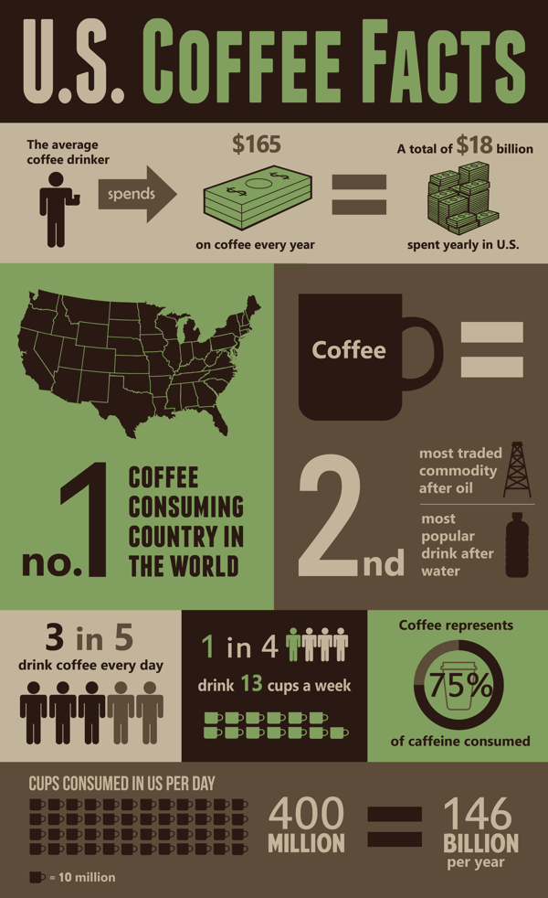

Why An App For Coffee?
Coffee is a major part of the lives of people all over the world.
For many people it’s a ritual. Having one place to go for coffee information
instead of having to deal with all the other noise from social media apps like
facebook, yelp, google etc. can streamline the consumption process for individuals.
The statistics for coffee are amazing, it’s a billion dollar industry and the
second largest commodity traded in the world behind oil, it only makes sense to
have a solitaire app that caters to consumers and merchants.
What/Who App Can Help?
- Coffee Shops(marketing, provide data and analytics)
- Growers Merchants and the Sustainablity of Coffee
- Consumers try different coffee and provide an awareness of coffee industry
How to Reach Audiences?
Still playing with design ideas. The above pirate/treasure hunt theme with a gamey
social media app that promotes trying different brands and drinks is an option for
consumers. While allowing shops and merchants to have a business account to promote
themselves Not unlike untappd for beer but for coffee. As the gourmet coffee industry
grows it would be nice to give consumers a fun way to keep up. Can help merchants by
keeping track of data and analytics through consumer check ins and such.